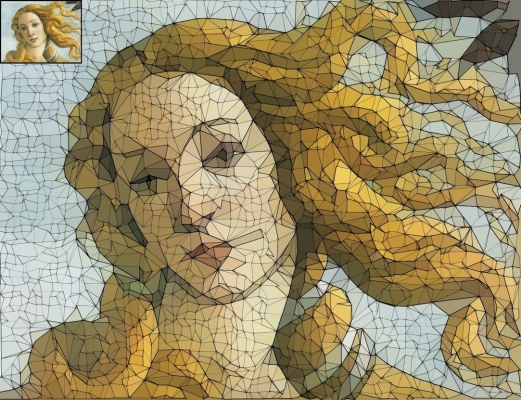
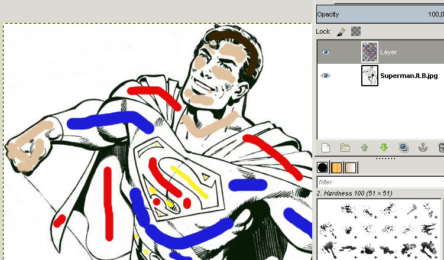
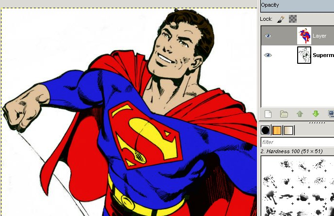

Le traitement des images au service de l'Art Numérique
RetourLe traitement des images au service de l'Art Numérique
La branche de recherche en traitement d'images au laboratoire du GREYC à développé des logiciels libres pour permettre aux utilisateurs d'utiliser des algorithmes de traitement avancés.
Le logiciel G'MIC (GREYC's Magic for Image Computing) est disponible sous forme de greffon pour le très utilisé GIMP, un logiciel de traitement d'images (type Photoshop) open-source.
Ce logiciel permet alors l'application d'algorithmes tels que Polygonize ou Colorize.
Polygonize va recréer l'image en entrée avec des triangles.
Colorize va nous permettre de colorer une image d'intensités automatiquement, en indiquant simplement quelle couleur utiliser sur telle surface.
 